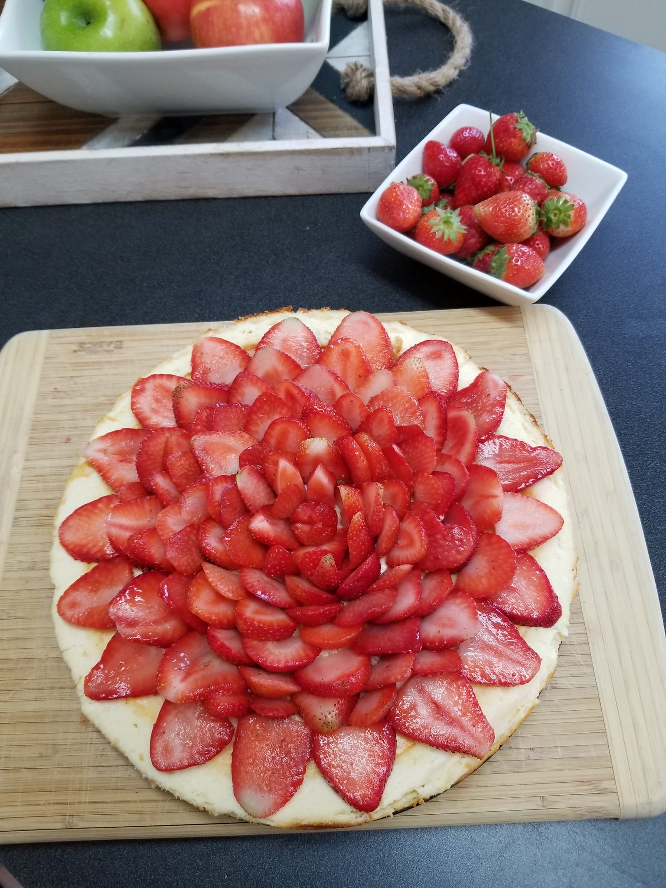

Cheesecake

Description
Do you want a taste of life's greatest creation? Look no further.
This recipe for a New York Style cheesecake will make sure you get a taste
of dessert like no other.
Ingredients
- 15 crushed graham crackers
- 2 tablespoons melted butter
- 4 (8 oz) packages cream cheese
- 1 and 1/2 cups white sugar
- 3/4 cup milk
- 4 regular eggs
- 1 cup sour cream
- 1 tablespoon vanilla extract
- 1/4 cup all-purpose flour